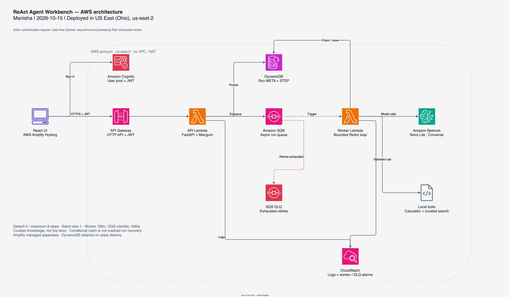
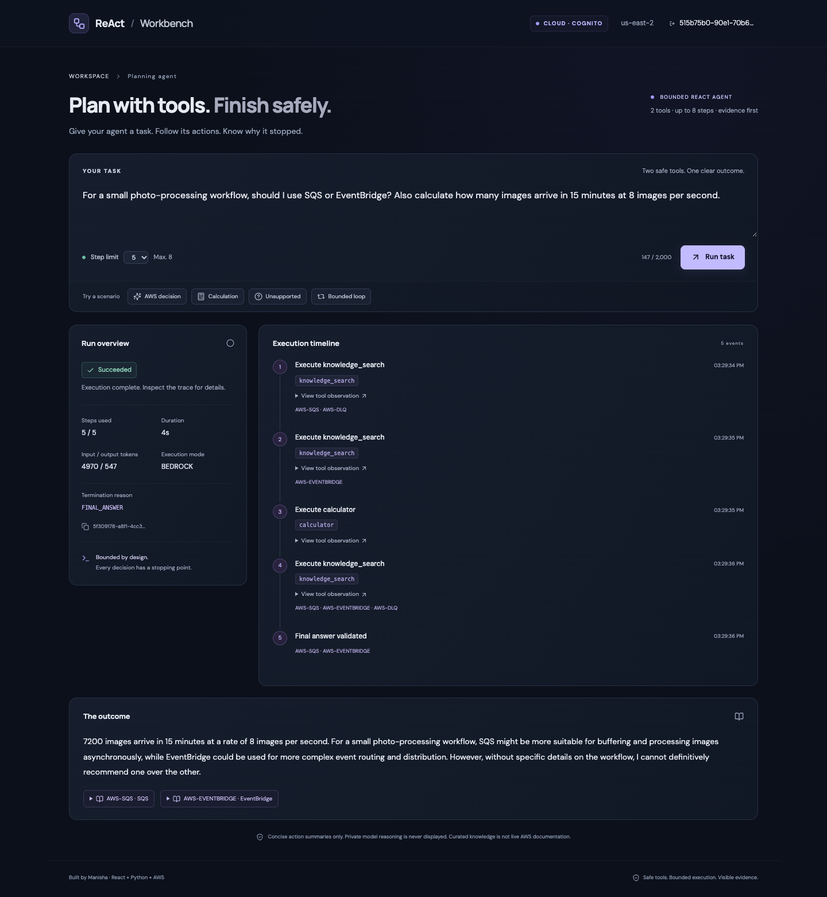

Bounded reasoning
Default five iterations, configurable up to eight; explicit terminal conditions for limit, failure or completion.
A hands-on AI engineering project: build a tool-using assistant with a bounded ReAct loop, transparent execution steps, safe fallbacks, and deployable AWS infrastructure.
Many agent demos can call a tool. This one demonstrates predictable stopping behavior, verified tool inputs, useful evidence, and an execution trail users can inspect.
Default five iterations, configurable up to eight; explicit terminal conditions for limit, failure or completion.
Restricted calculator and curated knowledge search. No arbitrary shell, code execution or open web scraping.
Sanitized action summaries, tool observations and real source IDs, without exposing internal chain-of-thought.
React is served through AWS Amplify Hosting. Cognito secures access. The API accepts tasks and enqueues work; a separate Lambda executes a bounded ReAct loop via Bedrock, persisting status and steps.

Source of truth: editable draw.io XML. Diagram matches the CDK stack deployed in Ohio; live model and browser checks passed.
React → API Gateway JWT authorizer → FastAPI Lambda → DynamoDB + SQS.
SQS → worker Lambda → Bedrock Converse → calculator/knowledge tool → DynamoDB.
CloudWatch logs and alarms. CDK manages the backend stack; Amplify Hosting needs its own teardown step.
A working React interface connected to FastAPI. This genuine screenshot shows the Amplify-hosted application, a real Bedrock run, both tools, and a cited result.

Open the local workbench after starting the app. Both processes stop with Ctrl+C. Local deployment guide →
Success, unsupported evidence, bounded loops, tool failures and injection scenarios. Verification record →
Cognito login, real Bedrock tool use, DynamoDB persistence and cross-user isolation verified. AWS deployment guide →
Run make setup and make dev. The verified mock UI, safe tools and tests require no AWS credentials.
CDK deploys backend infrastructure; configure Amplify Git hosting and Bedrock access separately.
Capture demo, run checks, remove Amplify app, destroy CDK stack, confirm remaining resources and spending.
Cost note: budgets are alerts, not caps. cdk destroy does not automatically remove manually created Amplify apps, account-level log groups, bootstrap assets or all regional charges. Follow the full teardown checklist.
This documentation page is static HTML and requires no API key. If an external website-generation API is integrated later, use server-side secrets; never embed the key in this HTML or the React bundle.